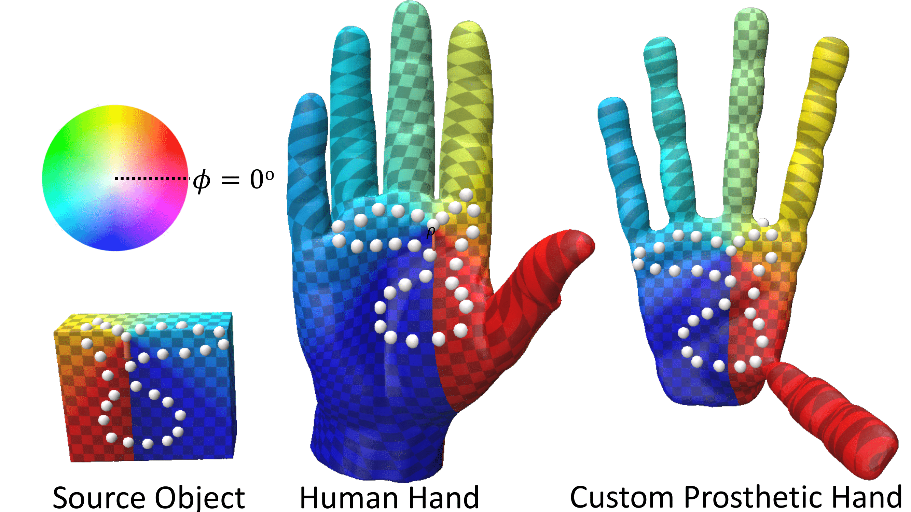
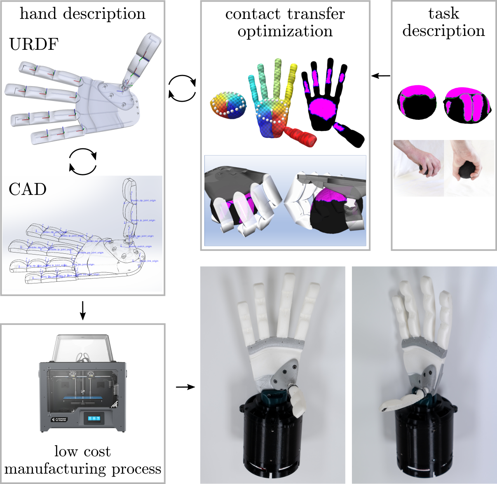
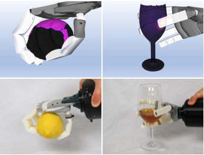
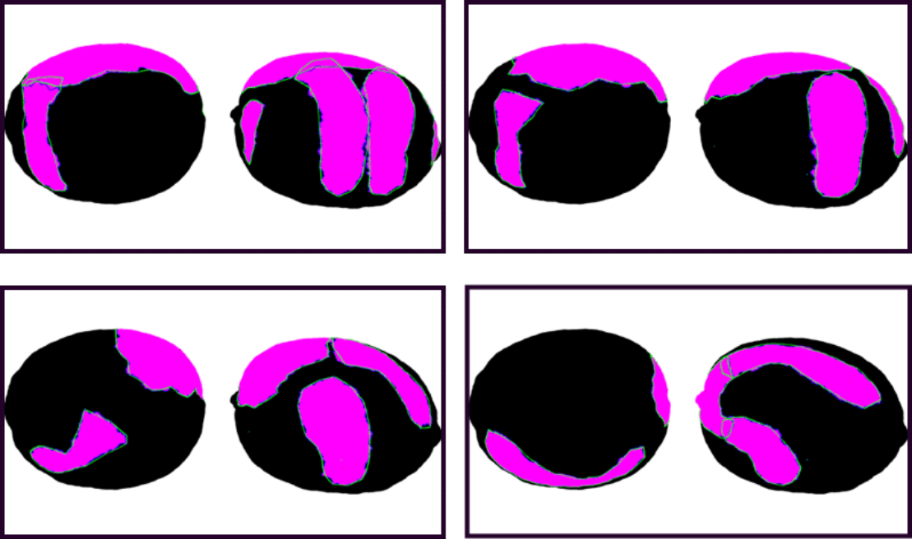
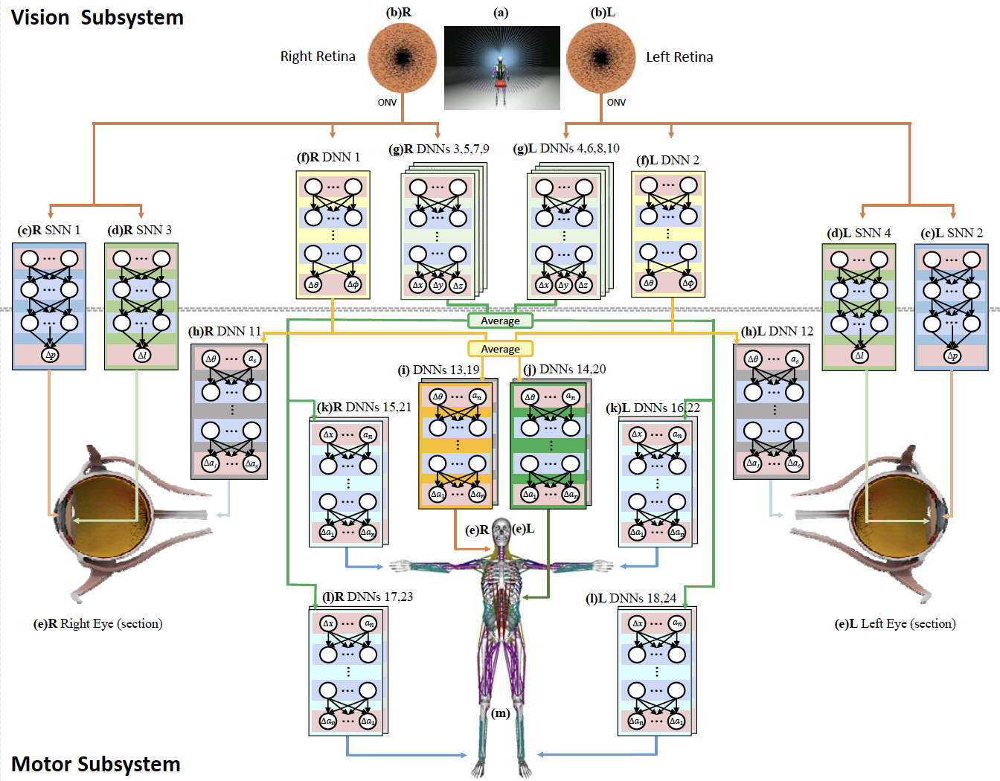
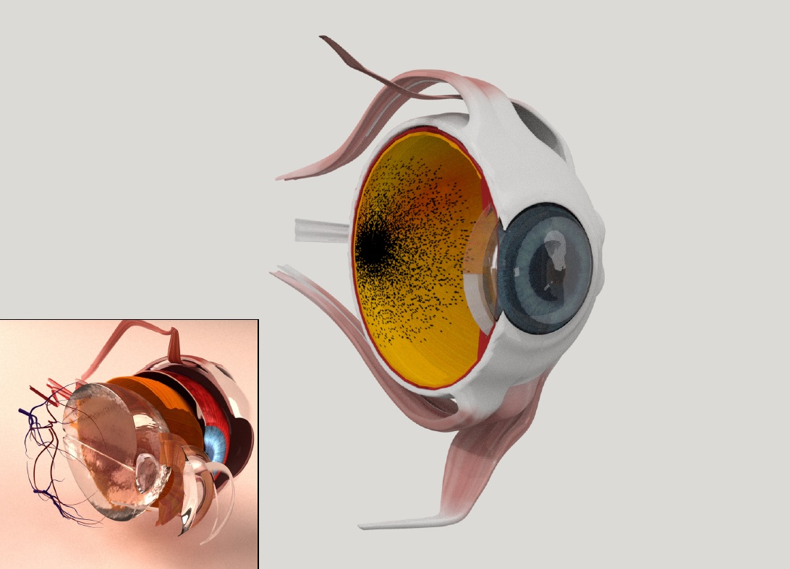

Arjun Lakshmipathy
PhD Student
Carnegie Mellon Univeristy
aslakshm andrew [dot] cmu [dot] edu
andrew [dot] cmu [dot] edu

Thanks for stopping by! I am a rising fourth year Computer Science PhD student at Carnegie Mellon University, where I am extremely fortunate to be advised by Nancy Pollard. I am concurrently a Visiting Researcher at Meta AI Research under the supervision of Tess Hellebrekers, and previously Jessica Hodgins. Before moving to Pittsburgh, I spent 6 wonderful years in sunny Los Angeles, where I received both my MS degree in Computer Science under the helpful supervision of Demetri Terzopoulos and dual BS degrees in Computer Science & Engineering + Math Economics at UCLA.
I am also a seasoned professional developer, having previously spent time as a Founding Scientist / Engineer at NeuralX Inc., a Software Engineer at Rally Health Inc., and a number of internships.
My research interests lie largely in imparting human-like capabilities to robots and virtual characters, and more broadly in robotics, visual computing, fabrication, and AI. I am largely motivated by applications targeted at practical real world situations, and have a particular interest in developing techniques that are compuationally and financially inexpensive, scalable, robust, and flexible to feedback. Much of my recent work has focused on the collection, modeling, and exploitation of realistic contact areas, which I believe will play an important role in the future of dexterous manipulation, tactile sensing, hand design, and soft robotics.
Publications

|
Contact Edit: Artist Tools for Intuitive Modeling of Hand-Object Interactions
A. S. Lakshmipathy, N. Feng, Y. X. Lee, M. Mahler, N.S. Pollard ACM Transactions on Graphics (SIGGRAPH), Los Angeles, USA 2023 [PDF] [arXiv] [Video] |
|
 |
Contact Transfer: A Direct, User-Driven Method for Human to Robot Transfer of Grasps and Manipulations
A. Lakshmipathy, D. Bauer, C. Bauer, N.S. Pollard IEEE International Conference on Robotics and Automation (ICRA), Philadelphia, USA 2022 [PDF] [arXiv] [Video] [Talk] |
|
 |
Towards Very Low-Cost Iterative Prototyping for Fully Printable Dexterous Soft Robotic Hands
D. Bauer, C. Bauer, A. Lakshmipathy, R. Shu, N.S. Pollard IEEE International Conference on Soft Robotics (ROBOSOFT), Edinburgh, UK 2022 [PDF] [Publication] [arXiv] [Video] |
|
 |
Fully Printable Low-Cost Dexterous Soft Robotic Manipulators for Agriculture
D. Bauer, C. Bauer, A. Lakshmipathy, N.S. Pollard AAAI Conference on Artificial Intelligence - AI for Agriculture and Food Systems Workshop (AAAI AIFS), Vancouver, Canada 2022 [PDF] |
|
 |
Contact Tracing: A Low Cost Reconstruction Framework for Surface Contact Interpolation
A. Lakshmipathy, D. Bauer, N.S. Pollard IEEE/RSJ International Conference on Intelligent Robots and Systems (IROS), Prague, Czech Republic 2021 [PDF] [Publication] [Video] [Talk] |

|
Locally-Connected, Irregular Deep Neural Networks for Biomimetic Active Vision in a Simulated Human
M. Nakada*, H. Chen*, A. Lakshmipathy, D. Terzopoulos IAPR International Conference on Pattern Recognition (ICPR), Milano, Italy 2021 [PDF] [Publication] |
|
 |
Deep Learning of Neuromuscular and Visuomotor Control in a Biomimetic Simulated Humanoid
M. Nakada, T. Zhou, H. Chen, A. Lakshmipathy, D. Terzopoulos IEEE Robotics and Automation Letters (RA-L) 2020 [PDF] [Publication] |
|
 |
Biomimetic Eye Modeling & Deep Neuromuscular Oculomotor Control
M. Nakada*, A. Lakshmipathy*, H. Chen, X. Ling, T. Zhou, D. Terzopoulos ACM Transactions on Graphics (SIGGRAPH Asia), Brisbane, Australia 2019 [PDF] [Publication] [Video] |

|
Biomimetic Modeling of the Eye and Deep Neuromuscular Oculomotor Control
A. Lakshmipathy M.S. Thesis, Computer Science Department, Univeristy of California, Los Angeles 2018 [PDF] [Publication] |
* indicates equal contribution